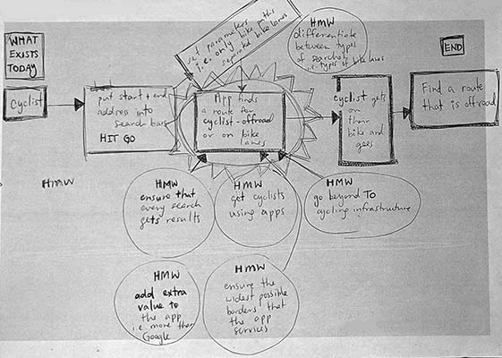
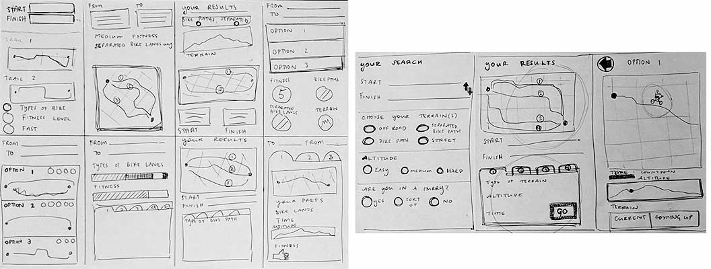
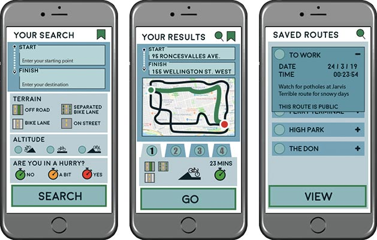

Cycle Wayfinder
Defining the Problem
For this project, we looked at various issues around transit in Toronto. I chose to look at the pain points around cycling as a mode of transport in Toronto. Through user interviews and survey responses from various cyclist communities in Toronto, I learned that the reasons for choosing a bike to get around were varied, but overall there were a few common reasons that surfaced: cycling is cheap, fast, fun, and good exercise.
Discovery Phase
Through this same user research, I also found that the only common resource that cyclists in this city use is the printed cycling roadmap published by the city of Toronto. There was not a single website or application that was mentioned in all of the survey responses. Because biking apps are not well used in Toronto, I ran a design sprint to understand how we might change this.
Safety on the road emerged as a major concern. Many people noted that they generally avoided streets without bike lanes, and they also noted that some of the greatest safety hazards while biking are cars parked in bike lanes and a general lack of respect for bike lanes by car drivers. Based on these findings, I focused on providing cyclists with the ability to quickly find a route that offered the level of safety they were comfortable with.
Prototype Phase
My interview and survey results offered me a fantastic picture of the variety of people that I could now imagine might benefit from my app. Cyclists in Toronto are extremely varied. They range from 20 to 70 years old, with every level of fitness. Many people are cycling to commute to work, and are therefore looking for a safe route but also a route that will get them where they need to go relatively quickly. Toronto cyclists tend to be fairly safety-conscious, with a strong desire to reduce risks by wearing a helmet and sometimes high-visibility reflective clothing, using lights while riding at night, and choosing routes along quiet side streets and bike lanes first. From this information, I built three user personas to help me focus on my users’ needs, experiences, and behaviours.
Mapping out a user journey helped to identify the key stages of the process, and then determine the most important “How Might We” questions.
From here, I moved into sketches of what these key screens might look like and how they would be structured. Before starting on low fidelity wireframes, I first used the crazy-8 technique to come up with as many different layout options as possible.
After perfecting the designs for the three key screens identified in the user journey, I moved into Sketch and Illustrator to create high fidelity wireframes, and finally InVision for the first prototype.

The Final Outcome
As a first iteration, I was keen to integrate some of the UI design for the search page from existing models such as Google Maps so as not to reinvent the wheel, but instead incorporate those actions that users are already so accustomed to using.
One of the things that would have to be considered would be whether or not there is an API that the app would be able to access for accurate and up-to-date cycling infrastructure in Toronto.
If I were to pursue the development of this app, I would like to explore why websites and apps are so underused by Toronto cyclists. More user research would uncover if this is simply because there is a lack of them, or if it is something else that is keeping people from seeking out online resources. I feel that this would be a key part of making this app successful; convincing cyclists to use an app will be an extra challenge if there is something blocking them from incorporating this type of resource into their daily lives and routines.